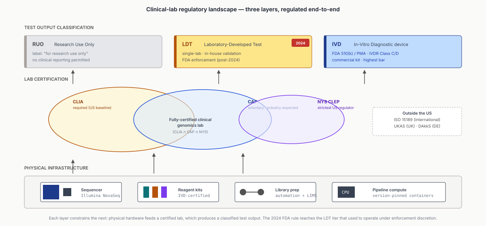
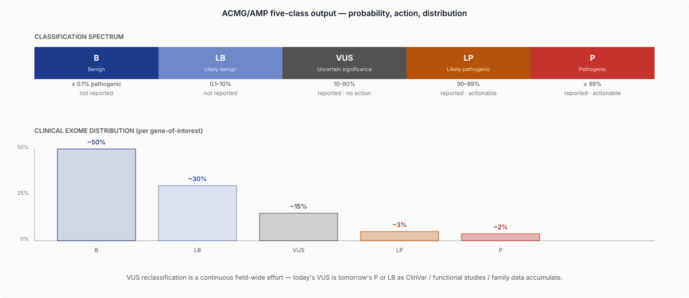
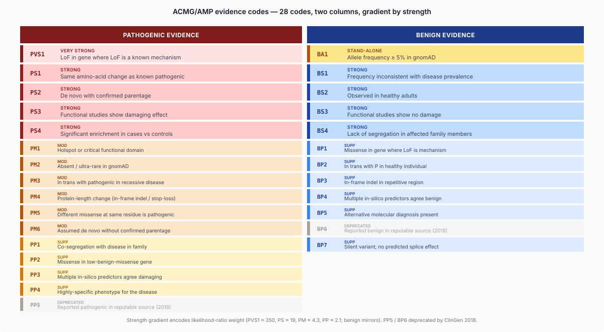
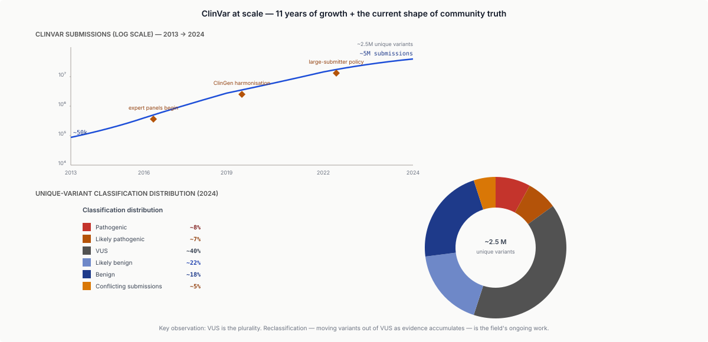
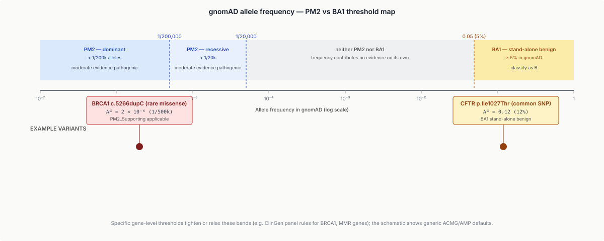
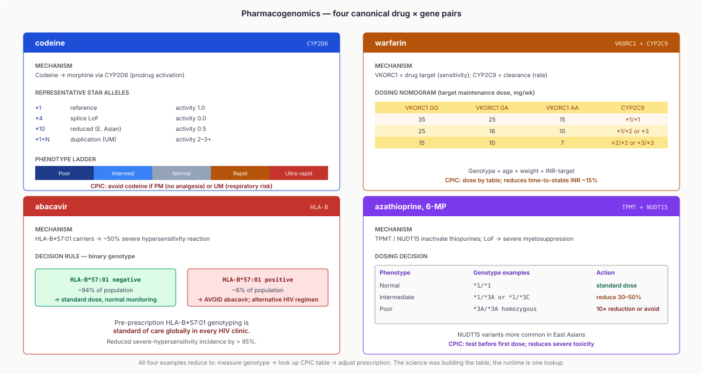
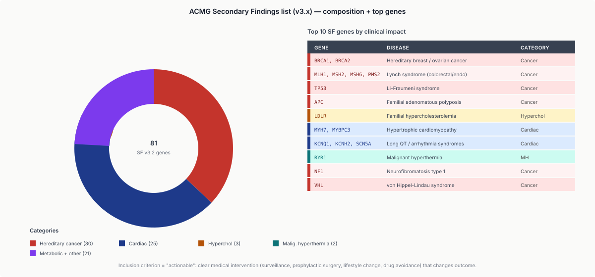

Eight moves: pin every version, assign evidence codes, apply the rule table, aggregate the dossier, look up the dose, gate the secondary findings, match the regulatory pathway, audit for ancestry bias.
Learning objectives
- Distinguish research and clinical bioinformatics pipelines; explain what CLIA / CAP certification, LDT vs IVD, and clinical validation require.
- Apply the ACMG/AMP 2015 variant-classification framework: identify evidence codes (PVS1, PS1–4, PM1–6, PP1–5, BA1, BS1–4, BP1–7), combine them via the rule set, and arrive at a pathogenic / likely pathogenic / VUS / likely benign / benign call.
- Assemble a variant evidence dossier using the standard resources — gnomAD for population frequency, REVEL / AlphaMissense for missense-impact prediction, SpliceAI for splice effects, ClinVar for prior classifications.
- Describe the current state of pharmacogenomics: CYP2D6/codeine, VKORC1/CYP2C9/warfarin, HLA-B*57:01/abacavir, TPMT/thiopurines; use PharmGKB and CPIC guidelines.
- Explain the ACMG secondary-findings list (v3.x), the right-not-to-know debate, and the operational workflow when incidental findings appear.
- Outline the US and EU regulatory landscape: FDA-approved sequencing assays (FoundationOne, MSK-IMPACT), the 2024 FDA LDT rule, EU IVDR, and DTC genomics (23andMe history).
- Articulate the ethics and data-sovereignty issues: GINA protections and their limits, ancestry bias in clinical databases, the Havasupai case, indigenous data sovereignty (CARE principles), and initiatives to improve diversity (All of Us, Our Future Health, H3Africa).
Part 1 · 20 min From Research to Clinic
1.1 Why this lecture
Previous lectures treated bioinformatics as research: pipelines, methods, open questions. This lecture covers the transition from "research result" to "clinical deliverable." When your pipeline's output informs a patient's diagnosis, dosing, or surgical decision, the rules change. Every EE student entering the genomics industry will, sooner or later, write code that touches this boundary.
Clinical bioinformatics differs from research bioinformatics in five fundamental ways:
- Accuracy at the individual level. A research pipeline reporting 99.8% recall is excellent; a clinical pipeline that misses 0.2% of pathogenic variants has missed a patient.
- Reproducibility and auditability. Every call must be re-derivable years later; every step logged; every tool version pinned.
- Turnaround time (TAT). Research: weeks. Clinical: 3–14 days for most tests.
- Regulation. Clinical labs are regulated (CLIA in the US, equivalents elsewhere); research labs are not.
- Sign-off. Every clinical report has a named physician signatory. Research papers have authors; clinical reports have a doctor whose license is at stake.
1.2 CLIA, CAP, and the lab ecosystem
In the United States:
- CLIA (Clinical Laboratory Improvement Amendments, 1988). Federal regulation of all clinical labs. Any lab testing human samples for health-related results must be CLIA-certified. Genomic tests are "high-complexity" CLIA tests.
- CAP accreditation (College of American Pathologists). Voluntary-but-expected peer accreditation; more rigorous than CLIA minimums. Most respected clinical labs carry CAP.
- NYS CLEP (New York State Clinical Laboratory Evaluation Program). Separate state-level certification. NYS has the strictest clinical-lab regulation in the US. Getting "NY approval" is a meaningful bar.
Outside the US:
- ISO 15189: international medical-laboratory quality standard. Essentially the global equivalent of CLIA + CAP.
- UKAS, DAkkS: UK and German national accreditation bodies, respectively.
Bioinformatics in CLIA labs:
- Pipeline must have a written validation document (Vali-doc) demonstrating accuracy on known samples.
- Every release has a standard operating procedure (SOP) with version tracking.
- Any change — even a tool version bump — requires re-validation or at minimum documentation.
- Internal Quality Control (IQC): known positive + negative controls run with each batch.
- External Quality Assessment (EQA): periodic blind proficiency tests (e.g. GenQA).
1.3 LDTs, IVDs, RUO
Assay regulatory classification:
- LDT (Laboratory-Developed Test). A test developed, validated, and performed within a single lab. Historically FDA's hands-off position; 2023–2024 rule changes (Part 6) now bring LDTs under FDA oversight.
- IVD (In-Vitro Diagnostic device). An FDA-cleared or FDA-approved assay sold as a kit (reagents, instruments, software). Much higher regulatory bar. Examples: FoundationOne CDx, Illumina TSO500.
- RUO (Research Use Only). Reagent or tool labelled for research, not clinical use. Many academic tools are RUO. Using RUO reagents for clinical reporting is a regulatory violation unless the lab performs their own clinical validation (turning the RUO input into a validated LDT output).
Most modern clinical genomic tests are LDTs built on a mix of FDA-cleared hardware (Illumina sequencers, IVDR-certified library-prep kits) + in-house analysis pipelines.

![Two parallel horizontal pipelines. Top track research: sample → sequence → align → variant call → analysis → manuscript, annotated tool versions float, months TAT, publication-grade. Bottom track clinical: sample with chain-of-custody → sequence with pinned reagent lot → align with pinned reference MD5 → variant call validated SOP → curation by named variant scientist → signed clinical report → EHR deposit, annotated SOP documented, CLIA/CAP audited, 3-14 day TAT, physician-signed. Vertical divider labelled regulatory boundary; everything below is regulated software.](../diagrams/lecture-17/01-research-vs-clinical.svg)
1.4 What changes in the code
Concrete differences a clinical software engineer notices:
- No bleeding-edge tool versions. Production is typically 1–2 years behind the research frontier. Stability > novelty.
- Containerised everything. The container image used is part of the validation; updating it requires re-validation.
- Explicit version pinning of reference genome, databases (ClinVar, gnomAD, HGMD), every auxiliary file. Pin by MD5 hash.
- Run-level audit trails. Every run has a UUID; each file produced has a provenance chain back to raw reads.
- Automated detection of validation drift. Regular reruns on reference samples (e.g. HG002 / GIAB) to catch any regression.
- Fail-closed, not fail-open. Ambiguous outputs must be reviewed, not auto-reported. A caller that silently outputs "no calls" on a low-coverage region should throw a loud warning, not a quiet empty VCF.
Part 2 · 50 min ACMG/AMP Variant Classification
2.1 Why a classification standard exists
Before 2015, clinical labs classified variants independently; the same variant could be called "pathogenic" in one lab and "VUS" in another. This was a problem for patients transferring between providers, for meta-analyses, and for multidisciplinary teams.
In 2015 the American College of Medical Genetics and Genomics (ACMG) and the Association for Molecular Pathology (AMP) jointly published a 28-page document (Richards et al. 2015, Genetics in Medicine) defining the standardised framework. The framework:
- Five-class output: pathogenic (P), likely pathogenic (LP), variant of uncertain significance (VUS), likely benign (LB), benign (B).
- Evidence codes: individual lines of evidence (e.g. "extremely rare in gnomAD" or "predicted to disrupt protein structure"), each with a specific strength label.
- Rules for combination: how evidence codes combine to produce the five-class call.
The goal was to make variant classification reproducible, auditable, and interpretable across labs. It has largely succeeded; ACMG/AMP is now the operating standard in almost every clinical genomics lab worldwide.
2.2 The five-class output
Each class carries a probabilistic interpretation:
- Pathogenic (P): $\geq 99\%$ probability of disease-causing for the patient's phenotype.
- Likely pathogenic (LP): 90–99% probability.
- Variant of Uncertain Significance (VUS): 10–90% probability. Reporting threshold: VUS results are returned to physicians but without clinical action.
- Likely benign (LB): 0.1–10% probability of pathogenic.
- Benign (B): $\leq 0.1\%$ probability.
Clinical actionability:
- P / LP: acted on (medication choice, surveillance, risk-reducing surgery, family testing).
- VUS: not acted on. Reported with a note. Reclassified as evidence accumulates.
- LB / B: not acted on. Usually not reported in a clinical context at all.
The VUS problem: the majority of variants in most genes are VUS. For rare genes with little population frequency data, VUS rates approach 50%. Reclassifying VUS → P/LP/B as evidence accumulates is a full-time job for variant scientists.

2.3 Evidence codes and their strengths
Twenty-eight evidence codes, organised by direction (pathogenic / benign) and strength.
Pathogenic evidence (stronger → weaker):
- PVS1 (Very Strong): loss-of-function (LoF) variant in a gene where LoF is a known disease mechanism. Examples: nonsense, frameshift, canonical splice site, single-exon deletion. Specific caveats apply — e.g. a stop-gain in the last exon may escape NMD and thus not be truly LoF.
- PS1–PS4 (Strong): PS1 — same amino-acid change as a previously-established pathogenic variant; PS2 — de novo confirmed by parental testing + confirmed parentage; PS3 — well-established functional studies showing damaging effect; PS4 — statistically significant enrichment in cases vs controls.
- PM1–PM6 (Moderate): PM1 — in a hotspot / critical domain; PM2 — absent from gnomAD (or extremely rare); PM3 — in trans with pathogenic variant in recessive disease; PM4 — protein-length change due to in-frame indel / stop-loss; PM5 — novel missense where different amino-acid change at same residue is known pathogenic; PM6 — assumed de novo without confirmed parentage.
- PP1–PP5 (Supporting): PP1 — co-segregation with disease in family; PP2 — missense in a gene with low benign-missense rate; PP3 — multiple in-silico predictors agree on damaging effect; PP4 — patient phenotype highly specific for the disease; PP5 — reported as pathogenic in a reputable source (now deprecated as of 2018 ClinGen update).
Benign evidence:
- BA1 (Stand-alone): allele frequency $\geq 5\%$ in gnomAD. Stand-alone = enough by itself to classify as B.
- BS1–BS4 (Strong): BS1 — allele frequency inconsistent with disease prevalence; BS2 — observed in healthy adults at an allele count inconsistent with disease; BS3 — well-established functional studies showing no damaging effect; BS4 — lack of segregation in affected family members.
- BP1–BP7 (Supporting): BP1 — missense in a gene where truncating variants (not missense) cause disease; BP2 — observed in trans with a pathogenic variant in a recessive gene, in a phenotypically healthy individual; BP3 — in-frame indel in repetitive region without known function; BP4 — multiple predictors agree benign; BP5 — observed in a case with an alternative molecular diagnosis; BP6 — reported benign in a reputable source (deprecated 2018); BP7 — silent variant not at splice consensus with no predicted splice effect.

2.4 Rule combination
Once evidence codes are assigned, the combinatorial rules determine classification:
Pathogenic (P):
- $1 \times \text{PVS1} + \geq 1 \times$ (PS or PM or PP with specific weighting), OR
- $\geq 2 \times \text{PS}$, OR
- $1 \times \text{PS} + \geq 3 \times \text{PM}$, OR
- $1 \times \text{PS} + 2 \times \text{PM} + 2 \times \text{PP}$, OR
- $1 \times \text{PS} + \geq 4 \times \text{PP}$, OR
- $\geq 3 \times \text{PM} + 2 \times \text{PP}$ (etc.)
Likely pathogenic (LP):
- $1 \times \text{PVS1} + 1 \times \text{PM}$, OR
- $1 \times \text{PS} + 1\text{–}2 \times \text{PM}$, OR
- $1 \times \text{PS} + \geq 2 \times \text{PP}$, OR
- $\geq 3 \times \text{PM}$, OR ...
Benign (B): $1 \times \text{BA1}$ alone, OR $\geq 2 \times \text{BS}$.
Likely benign (LB): $1 \times \text{BS} + 1 \times \text{BP}$, OR $\geq 2 \times \text{BP}$.
VUS: default when none of the above rules are met, or when pathogenic and benign evidence codes conflict.
The specific rules are a lookup table that's essentially memorised by variant scientists. Modern tools (InterVar, VarSome, Franklin) automate the lookup — but understanding what the rules say is still the core skill.
2.5 ClinGen refinements
The base ACMG/AMP rules are gene-agnostic. For high-interest genes, the ClinGen expert panels have published gene-specific refinements:
- BRCA1 / BRCA2 (breast/ovarian cancer): specific rules for when PVS1 applies based on exon location; frequency thresholds tuned for founder populations.
- TP53 (Li-Fraumeni syndrome): modifications for hotspot definitions.
- MMR genes (Lynch syndrome): specific thresholds + additional evidence codes.
- RASopathy genes: modifications for de novo handling.
- Cardiac channelopathies (SCN5A, KCNQ1): modifications reflecting the high VUS burden in these genes.
When a gene-specific ClinGen refinement exists, use it. When it doesn't, fall back to generic ACMG/AMP.
2.6 Sherloc and other frameworks
Sherloc (Nykamp et al. 2017, Invitae) is a refined variant-classification framework that extends ACMG/AMP with additional granularity. Specifics:
- More evidence-code subcategories.
- Explicit quantitative thresholds (points per code, summed to a score).
- Designed for high-throughput reclassification at scale.
Most Invitae / Ambry clinical reports follow Sherloc internally but report results using ACMG/AMP five-class labels.
2.7 ClinVar as community truth
ClinVar (NIH, freely accessible) is the community's aggregate variant-classification database:
- ~2.5M unique variants as of 2024.
- Each variant has one or more "submissions" from clinical labs, research groups, expert panels.
- Submissions are classified using ACMG/AMP (or Sherloc); ClinVar aggregates them.
- Aggregation result: single-star (one submission) to 4-star (multiple concordant submissions + expert panel + practice guideline).
How clinical variant scientists use ClinVar:
- Starting point: what has been said about this variant?
- Confidence check: is this variant widely agreed on or controversial?
- Historical tracker: was a variant previously LP but reclassified to VUS? (This happens regularly and is important.)
Not all ClinVar submissions are equal. Single-star, no-citation submissions can disagree with 4-star expert-panel classifications; the expert panel is usually right.

Part 3 · 30 min The Variant Evidence Ecosystem
3.1 Population frequency: gnomAD
The single most-used resource in variant classification is gnomAD (Karczewski et al. 2020). Allele frequencies across ~800k exomes + ~150k whole genomes, stratified by 8 continental ancestry groups.
Use cases in ACMG/AMP:
- BA1: variant present at $> 5\%$ in gnomAD → stand-alone benign.
- BS1: variant more common than disease prevalence (gene-specific threshold) → strong benign.
- PM2_Supporting: absent or extremely rare in gnomAD (various thresholds) → moderate-to-supporting pathogenic.
Specific gene-level frequency thresholds are important:
- For fully-penetrant autosomal dominant diseases: PM2 threshold usually $1/200\text{k}$ alleles.
- For recessive: PM2 threshold usually $1/20\text{k}$.
- For high-penetrance oncogenes (BRCA1): specific ClinGen-recommended thresholds.
Ancestry stratification matters: a variant that's rare in Europeans but common in Africans is still benign; don't use European-only frequencies for a patient of African ancestry.

3.2 Functional impact: REVEL, AlphaMissense
For missense variants, multiple in-silico predictors score the likelihood of functional impact. Agreement among predictors supports PP3 (supporting pathogenic) or BP4 (supporting benign).
Major predictors:
- REVEL (Ioannidis et al. 2016). Ensemble of 13 older predictors (SIFT, PolyPhen-2, MutationTaster, GERP, etc.). Produces a 0–1 score. Widely used; thresholds: $\geq 0.7$ for PP3, $\leq 0.15$ for BP4.
- AlphaMissense (Cheng et al. 2023). AlphaFold2-derived; predicts likely-pathogenic / likely-benign / ambiguous for every possible missense substitution. State of the art in 2024–2025. Thresholds similar to REVEL.
- CADD (Kircher et al. 2014). Ensemble score trained on evolutionary conservation + functional features. Produces a "phred-like" scaled score (typically 0–40). Still widely used but now mostly superseded.
- SpliceAI (Jaganathan et al. 2019). Deep-learning predictor of splice-altering variants. Essential for evaluating variants near splice sites but not in canonical sites. Thresholds: $\geq 0.5$ for splice disruption evidence (PP3 or PM5 depending on context).
Key caveats:
- These are decision supports, not deciders. PP3 is supporting evidence; don't call pathogenic on PP3 alone.
- Predictor ancestry bias: predictors trained predominantly on European data may underperform on African variants. This is a real and active research concern.
- Agreement required. Using just one predictor is discouraged; ACMG/AMP asks for multiple to agree. ClinGen panels often specify exactly which.
![Three side-by-side panels. Panel 1 REVEL: input missense, architecture ensemble of 13 simpler predictors fed into random forest, score 0-1, thresholds ≥0.7 PP3 ≤0.15 BP4. Panel 2 AlphaMissense: input missense, architecture AlphaFold2-derived structural-context classifier, score 0-1, thresholds ≥0.564 PP3 ≤0.340 BP4. Panel 3 SpliceAI: input variant ±10kb context, architecture deep CNN on one-hot sequence, score 0-1 per acceptor/donor gain/loss, thresholds ≥0.5 supporting and ≥0.8 strong. Bottom caption: multiple predictors must agree for PP3 or BP4.](../diagrams/lecture-17/06-predictors.svg)
3.3 Splicing: SpliceAI deep dive
Splice-altering variants are an under-appreciated pathogenicity class. A variant 50 bp inside an intron can create a new splice site, skipping an exon and producing a truncated protein.
SpliceAI is the workhorse:
- Takes a 10 kb window of genomic sequence centred on the variant.
- Outputs per-position "acceptor gain", "donor gain", "acceptor loss", "donor loss" probabilities.
- If any of these exceed a threshold (0.5 typical), the variant has a predicted splice effect.
Use in ACMG/AMP:
- SpliceAI $\geq 0.5$: splice effect evidence, applied as PP3 (supporting) or in specific cases PVS1_strong (very strong) if the variant disrupts a canonical splice site.
- SpliceAI $\geq 0.8$: strong evidence of splice disruption; PS3_moderate or PVS1 depending on context.
3.4 Literature mining and ClinGen
Literature — case reports, functional studies, family studies — contributes evidence codes PS3 (functional), PS4 (case-control statistics), PP1 (family segregation), PP4 (phenotype).
Tools to find relevant literature:
- LitVar (NCBI). Links variants to PubMed articles automatically. Saves hours of hand-searching.
- Mastermind (Genomenon). Commercial; broader coverage; subscription-based.
- ClinVar submissions themselves frequently include literature citations.
A typical clinical variant-scientist workflow for one variant:
- Query gnomAD → check frequency across ancestries.
- Query ClinVar → check prior classifications.
- Query functional predictors → REVEL / AM / SpliceAI scores.
- Literature search via LitVar or Mastermind → case reports, functional studies.
- Query phenotype databases (HGMD, OMIM) → is this gene associated with the patient's disease?
- Assemble evidence codes.
- Apply ACMG/AMP rules.
- Write a classification rationale (plain-text justification).
- Enter the classification into the lab's LIMS; generate the patient-facing report.
Total time per variant: 30 minutes to 4 hours depending on complexity. A clinical variant scientist handles 10–30 variants per day.
3.5 Variant interpretation is a profession
"Variant scientist" (or "variant analyst" / "clinical molecular geneticist") is a distinct professional role. Typical training: M.Sc. or Ph.D. in genetics / molecular biology, followed by 2–3 years of certification-track supervised practice, culminating in ACMG / board certification.
This is not a role an AI replaces today. ML predictors inform individual evidence codes (PP3/BP4); a variant scientist synthesises everything into a clinically-defensible classification with a human-readable rationale. Regulatory frameworks (CLIA, FDA) explicitly require this human-in-the-loop workflow.
The ML-augmented future: variant scientists' productivity doubles as AI pre-fills evidence codes and literature synthesis; human judgment still signs off.
Part 4 · 60 min Pharmacogenomics + Immunogenomics
4.1 The basics
Pharmacogenomics (PGx): how genetic variants affect drug response. A person's CYP450 enzyme genotypes affect how fast they metabolise many drugs. Standard dosing assumes average metabolism; for poor or ultra-rapid metabolisers, standard dosing can be dangerous.
Scope:
- Currently ~20 drug-gene pairs have Clinical Pharmacogenetics Implementation Consortium (CPIC) Level A evidence — "use this test result to change dosing."
- Another ~40 pairs at CPIC Level B — actionable recommendations but less universally adopted.
- Roughly 50% of FDA-approved drugs have some PGx label, though fewer are routinely genotyped clinically.
The underlying science: cytochrome P450 enzymes (CYP2D6, CYP2C9, CYP2C19, CYP3A4) and other pharmacokinetic enzymes have common loss-of-function or gain-of-function variants. Different ethnic groups carry these variants at different frequencies.
4.2 The canonical cases
CYP2D6 and codeine:
- Codeine is a prodrug. CYP2D6 metabolises it to morphine, which provides analgesia.
- Poor metabolisers (~7% of Europeans): get no pain relief from codeine.
- Ultra-rapid metabolisers (~3% of Europeans, up to 30% in some North African populations): metabolise codeine so fast that morphine levels spike → respiratory depression. A few paediatric deaths from codeine-containing cough syrups in ultra-rapid metabolisers led the FDA to restrict codeine use in children.
- PGx action: know the patient's CYP2D6 metaboliser status; choose an alternative opioid (hydromorphone, oxycodone for normal metabolism via CYP3A4) if PM or UM.
Warfarin (VKORC1 + CYP2C9):
- Warfarin is the classical anticoagulant. Dosing is notoriously difficult — too little and the patient clots; too much and the patient bleeds.
- VKORC1 -1639G>A variant: enzyme-sensitivity locus. Affects warfarin requirement.
- CYP2C9 *2 and *3 alleles: metabolism locus. Slower metabolism → lower dose needed.
- Genotype-guided dosing algorithms (Gage et al. 2008, IWPC 2009) predict steady-state dose from genotype + age + weight + INR. Reduces time-to-stable-INR by ~15%. Not yet universally adopted; DOACs (rivaroxaban, apixaban) have displaced warfarin for most indications.
HLA-B*57:01 and abacavir:
- Abacavir is an HIV reverse-transcriptase inhibitor.
- Patients carrying HLA-B*57:01 have a ~50% rate of severe hypersensitivity reaction. Without testing, ~5% of patients experience life-threatening reactions.
- Pre-prescription HLA-B*57:01 genotyping is standard of care in every HIV clinic globally. Reduced hypersensitivity incidence by > 95%.
TPMT / NUDT15 and thiopurines:
- Thiopurines (azathioprine, mercaptopurine) are used for leukaemia, autoimmune disease, and inflammatory bowel disease.
- TPMT enzyme metabolises them. TPMT deficiency (homozygous *3A, *3B, *3C) causes severe myelosuppression at standard doses.
- NUDT15 variants, common in East Asian populations, have a similar effect.
- Pre-treatment TPMT (and NUDT15 for Asian ancestry) testing reduces severe toxicity events.

4.3 Star-allele nomenclature
PGx uses star-allele nomenclature to describe haplotypes:
- CYP2D6*1: the reference (wild-type) allele.
- CYP2D6*4: a common loss-of-function haplotype (carries a splicing variant + SNPs).
- CYP2D6*10: a reduced-function haplotype common in East Asians.
- CYP2D6*17: a reduced-function haplotype common in Africans.
Each star allele is a defined combination of variants at a gene — a haplotype. The PGx community maintains these definitions at PharmVar (pharmvar.org).
Metaboliser phenotypes derive from star-allele combinations:
- CYP2D6 *1/*1: normal metaboliser.
- *1/*4: intermediate metaboliser.
- *4/*4: poor metaboliser.
- *1/*2 ×N (gene duplication): ultra-rapid metaboliser.
4.4 PharmGKB and CPIC
PharmGKB (pharmgkb.org): the community-maintained PGx knowledge base. For each drug-gene pair:
- Known variants and their effects.
- Metaboliser phenotype definitions.
- Levels of evidence for clinical relevance.
- Links to dosing guidelines.
CPIC (Clinical Pharmacogenetics Implementation Consortium): drafts and publishes dosing guidelines per drug-gene pair. Format: "if patient genotype is $X$, give dose $Y$" tables.
Typical clinical workflow:
- Order test → genotype the PGx panel (Illumina targeted panel, microarray, or WGS).
- Software translates genotype → star alleles → metaboliser phenotype.
- Clinician sees a report with dosing recommendations pulled from CPIC.
- Clinician adjusts prescription.
Several health systems (Vanderbilt PREDICT, St. Jude PG4KDS, Mayo Clinic) pre-emptively genotype patients and have the PGx results available for any future prescribing decision. The model is working; scaling is slow.
4.5 PGx is under-used
Despite strong evidence, PGx is under-utilised in routine care:
- Reimbursement (insurance) is patchy; patients often pay out of pocket.
- Electronic Health Record (EHR) integration is unevenly implemented; many physicians don't see the genotype when prescribing.
- Physicians are unfamiliar with metaboliser phenotypes beyond a handful of well-known cases.
- The list of actionable PGx drug-gene pairs is growing, but each addition requires reimbursement and EHR plumbing.
4.6 Immunogenomics primer — HLA, TCR, BCR
Pharmacogenomics treated HLA-B*57:01 / abacavir as a single PGx case. But the immune-genome system is much larger and increasingly clinical-relevant on its own. Immunogenomics is the bioinformatics of three highly-polymorphic gene families: HLA / MHC, T-cell receptors (TCR), and B-cell receptors / antibodies (BCR / Ig).
HLA typing. The Major Histocompatibility Complex on chromosome 6 contains the HLA genes — the most polymorphic locus in the human genome. HLA class I (A, B, C) presents peptides to CD8 T cells; HLA class II (DR, DQ, DP) presents to CD4. HLA typing matters for:
- Transplant matching: HLA-mismatched grafts trigger rejection; matched siblings are the gold standard.
- Drug hypersensitivity: HLA-B*57:01 / abacavir, HLA-B*15:02 / carbamazepine, HLA-B*58:01 / allopurinol — all standard pre-prescription tests.
- Autoimmune disease association: HLA-DRB1*04 with rheumatoid arthritis, HLA-DQ2/DQ8 with celiac disease, HLA-B*27 with ankylosing spondylitis.
- Cancer immunotherapy: HLA loss-of-heterozygosity in tumours is a known immune-evasion mechanism; HLA genotype influences neoantigen presentation.
Computational HLA typing from short-read WES / WGS is non-trivial because the HLA locus is too divergent for standard alignment. Specialised tools — OptiType (Class I from RNA-seq / WES), HLA-LA (graph-based, accurate at 4-digit resolution), arcasHLA — assemble or graph-align reads to a curated HLA reference (IMGT / HLA database, ~30,000 alleles).
Output: a 4- or 6-digit HLA call (e.g., HLA-A*02:01:01). The first two digits give the antigenic family; the next two refine the protein sequence; remaining digits indicate synonymous variation.
TCR / BCR repertoire sequencing. T-cell and B-cell receptors are generated by V(D)J recombination — somatic rearrangement of variable (V), diversity (D), and joining (J) gene segments, plus random nucleotide insertion at junctions. Each lymphocyte gets a unique receptor; the population's repertoire holds ~10⁸ distinct clones in a healthy adult.
TCR-seq / BCR-seq:
- Bulk repertoire-seq: PCR-amplify TCR β chain (or both chains) from sorted T cells; sequence the CDR3 region; count clones.
- Single-cell paired-chain (10× Genomics VDJ): paired α/β chains per cell linked to gene-expression profile in the same cell.
- Targeted clone tracking: detect a tumour-specific clone in peripheral blood as a minimal-residual-disease (MRD) marker.
Tools: MiXCR, IgBLAST, TRUST4, VDJtools for repertoire reconstruction. Output: per-clone CDR3 sequence + abundance + V/D/J segment usage.
Repertoire metrics:
- Diversity (Shannon, Simpson, D50): how many distinct clones; healthy adults ~10⁶ unique clones in blood.
- Clonality: 1 - normalised entropy; near 0 in healthy diversity, near 1 when one clone dominates (e.g., leukaemia).
- Public clones: identical CDR3 across individuals — usually pathogen-specific (CMV, EBV, COVID).
Neoantigen prediction. The bridge between immunogenomics and cancer (Lecture 18 / new L27): tumour somatic mutations create novel peptides not present in normal tissue. If those peptides bind the patient's HLA, they may be presented to T cells → immunotherapy targets.
Pipeline:
- Tumour-normal sequencing → somatic missense mutations.
- HLA typing of patient germline.
- Translate each mutation to a 9-11-mer peptide window.
- Predict HLA binding affinity (NetMHCpan, MHCflurry — deep-learning predictors).
- Filter for tumour-expressed (RNA-seq), strong-binding (rank ≤ 0.5%), de novo (not in self-proteome).
- Output: ranked neoantigen list for therapeutic vaccines or TCR-T design.
This pipeline drives personal-neoantigen vaccines (Moderna mRNA-4157 / Merck V940 in melanoma; Phase III), TCR-T cell therapy, and pembrolizumab-response prediction (high neoantigen load correlates with response).
![Top: HLA peptide presentation pathway — tumour cell with somatic mutation, mutant protein, proteasomal degradation to 9-mer pool, TAP transport, HLA class I loading, peptide-MHC complex on cell surface, recognition by CD8 T cell receptor. Annotated three computational steps: predict cleavage (NetChop), predict HLA binding (NetMHCpan, MHCflurry), filter for tumour expression (RNA-seq). Middle: V(D)J recombination of TCR β locus showing germline V (~50), D (2), J (~13), C segments, then somatic recombination producing CDR3 with N-region nucleotide additions, theoretical diversity ~10^15 TCRs. Bottom: 5-stage neoantigen pipeline — tumour-vs-normal Mutect2 (~150 missense) → HLA typing OptiType (6 class-I alleles) → translate to 9-11mer windows (~1500 candidates) → predict HLA binding NetMHCpan rank ≤ 0.5% → filter expressed RNA-seq TPM > 1 → ~10 high-confidence candidates feeding personal mRNA vaccines (Moderna mRNA-4157), TCR-T cell design, pembrolizumab response biomarker.](../diagrams/lecture-17/13-immunogenomics.svg)
Part 5 · 20 min Incidental Findings
5.1 The problem
A patient comes in for cardiomyopathy testing. The lab sequences their exome. In addition to the indication-relevant variant, the lab finds a pathogenic BRCA1 mutation — unrelated to the test indication, but with serious implications (high lifetime breast / ovarian cancer risk).
Report it? Don't report it? Depends on the patient's consent model?
This is the incidental finding (or "secondary finding") problem. It arises naturally whenever broad sequencing (exome, whole genome) is performed.
5.2 The ACMG SF list
In 2013, ACMG published a recommended minimum list of genes for which pathogenic variants should be reported as incidental findings, if the patient consents (or under an opt-out model, unless they opt out). This has become the ACMG Secondary Findings (SF) list.
- SF v1 (2013): 56 genes, primarily cardiovascular + cancer predisposition.
- SF v2 (2017): 59 genes.
- SF v3.0 / 3.1 / 3.2 (2021–2024): ~81 genes currently.
Categories covered:
- Hereditary cancer syndromes: BRCA1/2, MLH1/MSH2/MSH6/PMS2/EPCAM (Lynch), TP53, APC, MUTYH, NF1/2, PTEN, RET, VHL, etc.
- Familial hypercholesterolemia: LDLR, APOB, PCSK9.
- Inherited arrhythmia syndromes: SCN5A, KCNQ1, KCNH2, RYR2.
- Cardiomyopathies: MYH7, MYBPC3, TNNT2, etc.
- Malignant hyperthermia susceptibility: RYR1, CACNA1S.
- Several others: Marfan, Ehlers-Danlos vascular type, Wilson disease, etc.
Key criteria for inclusion on the SF list: actionable — there's a clear medical intervention (surveillance, prophylactic surgery, lifestyle change, drug avoidance) that changes outcome if the variant is known.

5.3 The right not to know
Patients have a right to not know incidental findings if they prefer. The ACMG's evolving position:
- 2013: opt-out model; labs must report unless patient declines.
- 2014: opt-in model; labs must ask.
- 2021+: explicit patient-facing consent; specific acknowledgment of SF-list findings.
The arguments for reporting:
- Actionable findings save lives.
- Patients benefit from information about their own genome.
- The incremental cost is near-zero once sequencing is done.
The arguments against universal reporting:
- Psychological distress in the absence of clear intervention.
- Downstream costs (surveillance, surgery) may not be reimbursed.
- Family members may be implicated without consent.
- Not all "actionable" findings clearly benefit patients; the evidence is genuinely mixed for some genes.
5.4 Incidental findings in practice
Practical workflow when an incidental finding is suspected:
- Confirm the variant (re-sequence with a different chemistry, ideally).
- Re-classify the variant carefully using ACMG/AMP + ClinGen gene-specific guidelines.
- Only report if:
- Pathogenic or LP (not VUS).
- Patient consented to receive SF-list findings.
- Gene is on the current ACMG SF list (or otherwise clearly actionable).
- Route the finding through the appropriate clinical workflow (usually a genetic counsellor before a physician).
- Document in the clinical report under a distinct "Secondary Findings" section.
Notable failure modes:
- A VUS in a cancer-predisposition gene returned as actionable → patient has unnecessary prophylactic surgery.
- An SF-list variant missed because it wasn't queried → patient dies of a preventable cancer.
- An SF-list variant reported without consent → consent violation with legal liability.
Part 6 · 25 min Regulatory Landscape
6.1 FDA-cleared sequencing assays
The FDA clears sequencing assays through two main pathways:
- 510(k) clearance: "substantially equivalent" to a predicate device. Faster, less rigorous.
- PMA (Premarket Approval): rigorous; required for high-risk Class III devices. Includes companion-diagnostic (CDx) approvals.
Major FDA-cleared / approved genomic assays:
- FoundationOne CDx (Foundation Medicine, Roche; 2017 FDA PMA). 324-gene tumour-profiling NGS panel. Approved as CDx for multiple targeted therapies. Heavy industry use.
- MSK-IMPACT (Memorial Sloan Kettering; 2017 FDA authorization). 468-gene tumour panel. Unusual: FDA "authorization" for an LDT, paving the way for the 2023 rule change.
- Illumina TruSight Oncology 500: large cancer panel.
- Oncomine Dx Target Test: ThermoFisher's NGS-based CDx for lung cancer.
For germline (inherited) testing, FDA-cleared kits are fewer: much of the market is LDTs (see next).
6.2 The 2024 FDA LDT rule
Historically, the FDA claimed regulatory authority over LDTs but exercised enforcement discretion — in effect, not regulating them. This is how most clinical genomic testing operated.
In April 2024, the FDA finalised a rule ending enforcement discretion. Phased implementation over 4 years (2024–2028):
- Year 1: adverse-event reporting requirements.
- Year 2: quality system regulation compliance.
- Year 3: registration + listing requirements.
- Year 4: premarket review for high-risk LDTs.
Industry response has been mixed — some large labs (Mayo Clinic, Quest, LabCorp) are preparing; smaller labs are concerned about the regulatory burden. A Congressional review of the rule is ongoing as of 2025.
The practical effect for bioinformatics software: clinical pipelines will need more explicit regulatory documentation. Existing validation practices (Part 1) will need to formalise further.
6.3 EU IVDR
The In-Vitro Diagnostic Medical Devices Regulation (IVDR) replaced the previous IVD Directive in May 2022 (after multiple delays).
Classifies IVDs into A/B/C/D risk classes. Genomic tests for severe hereditary disease are typically Class C; tumour profiling may be Class C or D.
Requirements:
- Notified Body certification for Class C/D devices.
- Clinical performance studies demonstrating accuracy on the intended population.
- Post-market surveillance with active follow-up.
- CE mark for market access.
Transition challenges: many labs that operated under the previous IVD Directive have struggled to complete IVDR certification in time. The EU has repeatedly extended deadlines. As of 2025, IVDR certification is a significant pain point for European clinical labs.
6.4 Direct-to-consumer testing
DTC genomics is regulated differently from clinical testing.
- 23andMe (founded 2007). Started returning health-related reports without FDA involvement. In November 2013, FDA issued a warning letter demanding cessation. 23andMe complied; shifted to ancestry-only reports.
- April 2017: FDA authorised 23andMe to return limited health-related information (e.g. BRCA variants for the three Ashkenazi-founder mutations — not general BRCA, a tight scope). The ancestry-plus-light-health model resumed.
- March 2018: 23andMe authorised for BRCA (three specific variants) DTC reports.
- 2022+: 23andMe has broadened its clinical partnerships and diagnostic offerings but remains DTC-first.
Regulatory question: should a consumer directly learn they carry a BRCA variant without a physician interpreter? The 23andMe compromise (limited variants, clear disclaimers, optional genetic counselling) is the current answer, but remains controversial.
![Flowchart starting at assay concept and branching three ways. Top branch RUO Research Use Only, grey, ending at research-only applications. Middle branch LDT Laboratory-Developed Test, amber, pre-2024 enforcement discretion and post-2024 phased FDA oversight (adverse-event reporting → quality-system compliance → registration → premarket review), ending at clinical LDT in regulated lab. Bottom branch FDA-reviewed IVD splitting into 510(k) substantially equivalent (faster) and PMA premarket approval (rigorous, used for CDx), ending at commercial IVD kit. Examples annotated per branch.](../diagrams/lecture-17/09-fda-pathway.svg)
6.5 What this means for software
As regulation tightens, bioinformatics software is increasingly treated as part of the medical device:
- Software as a Medical Device (SaMD) FDA framework applies to clinical pipelines.
- Change-management plans required: every software update has a predetermined scope and validation requirements.
- Design controls: documented requirements, design decisions, testing, traceability.
- Cybersecurity requirements: especially if the software is cloud-deployed.
In practice: a bioinformatician writing clinical pipelines is writing regulated software. The skills overlap with medical-device firmware engineering (ISO 62304, IEC 62366-1) more than with research scientific computing.
Part 7 · 25 min Ethics, Equity, and Data Sovereignty
7.1 GINA and its limits
The Genetic Information Nondiscrimination Act (GINA), US federal law signed 2008. Covers:
- Employment: employers cannot use genetic information in hiring, firing, or promotion decisions.
- Health insurance: group and individual health insurers cannot use genetic information for coverage or pricing decisions.
Does not cover:
- Life insurance. A life insurer can ask about (and use) genetic test results.
- Long-term care insurance. Same.
- Disability insurance. Same.
- Small employers (< 15 employees).
- US military (separate regulatory regime).
The carve-outs are a significant issue. A BRCA1 carrier testing positive may be unable to obtain affordable life insurance. Some states (California, Florida) have stricter state-level protections against insurance discrimination that fill the gaps.
![Venn-like diagram of insurance and employment domains. Central cobalt-filled region: Covered by GINA — health insurance group and individual, employment large employers ≥15. Outer red-outlined regions: NOT Covered — life insurance, disability insurance, long-term care, small employers, US military. Small green state-level inserts over the red regions for California, Florida, Vermont indicating partial state-law fill. Bottom caption: carve-outs reflect 2008 legislative compromises; bills to close them have been introduced periodically but not passed.](../diagrams/lecture-17/10-gina-coverage.svg)
7.2 Ancestry bias in clinical databases
The problem: clinical-genomics resources are dominated by people of European ancestry. Consequences cascade:
- ClinVar: ~70% of submissions are about variants seen in European patients.
- gnomAD: 56% European; African-ancestry subset is growing but remains smaller.
- Functional predictors: REVEL / AlphaMissense trained on datasets where European variants dominate.
- PRS training cohorts: overwhelmingly European (L13 §5.4).
Consequence for non-European patients:
- Higher VUS rates. Variants common in African populations are more often "rare and unknown" in European-dominated ClinVar — they get flagged as potential pathogens.
- Lower predictor accuracy. Missense predictors may underperform on populations under-represented in training.
- Worse clinical actionability. Fewer firm classifications → fewer actionable findings → worse care.
Initiatives to close the gap:
- All of Us Research Program (US): target 1M+ participants with strong minority representation.
- Our Future Health (UK): similar goal.
- H3Africa: African-focused genomic research consortium.
- Biobank Japan, Biobank Korea: East Asian coverage.
![Three stacked horizontal bar charts. Top: ClinVar submissions by ancestry — European 70%, East Asian 10%, African 6%, South Asian 3%, Admixed American 2%, unknown/mixed 9%. Middle: gnomAD v4 composition — European non-Finnish 36%, Finnish 5%, East Asian 10%, African 20%, Admixed American 13%, South Asian 6%, Ashkenazi Jewish 3%, Other 7%. Bottom: REVEL/AlphaMissense F1 by ancestry — European 0.88, East Asian 0.84, South Asian 0.82, Admixed American 0.83, African 0.78. Bottom annotation: accuracy follows training-distribution coverage; diverse data closes the gap.](../diagrams/lecture-17/12-ancestry-bias.svg)
7.3 Havasupai and data sovereignty
The Havasupai Tribe v. Arizona Board of Regents (case filed 2004, settled 2010):
- In 1989, Arizona State University researchers collected blood samples from the Havasupai Tribe (Grand Canyon region) for a diabetes-genetics study.
- Over the following decade, the samples were used for unauthorised research on schizophrenia, inbreeding, and population migration — research the Tribe had not consented to and considered culturally harmful.
- In 2004, Tribal members learned about the additional research.
- The Tribe sued; settled 2010; ASU returned the blood samples (a significant symbolic act); paid $700k; built a health clinic.
Consequences:
- The case became a defining precedent for indigenous data sovereignty in US research.
- NIH strengthened tribal-consultation requirements.
- Several large cohort studies now include explicit tribal governance provisions.
7.4 CARE principles and indigenous data sovereignty
The CARE Principles for Indigenous Data Governance (Global Indigenous Data Alliance, 2019):
- Collective benefit: data ecosystems facilitate positive outcomes for Indigenous Peoples.
- Authority to control: Indigenous Peoples' rights to determine how their data are used.
- Responsibility: those working with Indigenous data have a duty to share benefits and acknowledge the relationship.
- Ethics: Indigenous Peoples' rights and wellbeing are the primary concern.
Complementary to the FAIR Principles (Findable, Accessible, Interoperable, Reusable) from the open-data movement; CARE adds the governance layer.
In practice: modern genomic studies involving Indigenous communities increasingly incorporate both FAIR + CARE, with community-level consent, data access restrictions, and benefit-sharing agreements.
7.5 Diverse cohorts and the path forward
Several large-scale initiatives are working to change the landscape:
- All of Us (US, 2018+). Target 1M+ US participants with explicit mandate for 50%+ minority enrolment. Enrolment as of 2024: ~700k; data releases ongoing.
- Our Future Health (UK, 2020+). Target 5M UK participants.
- H3Africa (African Genomic Diversity Consortium, 2012+). Pan-African cohort with local infrastructure building.
- TOPMed (NHLBI, 2014+). Multi-ethnic WGS cohort (~150k genomes).
- PAGE (Population Architecture using Genomics and Epidemiology, 2008+). US minority-focused consortium.
- Million Veteran Program (VA, 2011+). US veterans, more diverse than UK Biobank equivalents.
The data these cohorts generate feeds back into ClinVar, gnomAD, AlphaMissense training sets, and PRS portability models. Progress is measurable: gnomAD v4 (2024) is materially more diverse than v2 (2020). Full equity remains years away.
Wrap-up
What you should take away
- Clinical bioinformatics is regulated software. CLIA / CAP / IVDR / FDA compliance shapes every design decision; validation and version-pinning are structural, not optional.
- ACMG/AMP is the classification standard. Evidence codes + combinatorial rules → P/LP/VUS/LB/B. Auditable, explainable, explicitly not end-to-end ML.
- The evidence ecosystem is structured. gnomAD (frequency), REVEL/AlphaMissense (functional impact), SpliceAI (splicing), ClinVar (prior classifications), literature (PS3/PS4/PP1/PP4). A variant scientist synthesises across these.
- Pharmacogenomics is operational. CYP2D6/codeine, VKORC1+CYP2C9/warfarin, HLA-B*57:01/abacavir, TPMT/thiopurines. CPIC guidelines drive dosing. PharmGKB / PharmVar are the reference tables.
- Incidental findings require explicit consent + a gene list. ACMG SF v3.x (~81 genes, actionable). Right-not-to-know is real; opt-in consent is current practice.
- Regulation is tightening. 2024 FDA LDT rule; EU IVDR; FDA's Software as a Medical Device framework. Clinical bioinformatics is increasingly regulated software engineering.
- GINA protects narrowly. Health insurance + employment yes; life / disability / long-term care no. The gaps matter.
- Ancestry bias is systematic. ClinVar / gnomAD / predictors dominated by European data; non-European patients get higher VUS rates, lower predictor accuracy, worse care. Cohort diversity (All of Us, H3Africa, Biobank Japan, etc.) is the structural fix.
- Indigenous data sovereignty matters. Havasupai, CARE principles. Research consent is community-level, not just individual-level, in these contexts.
Next lecture
Cancer genomics — integrated capstone. Somatic vs germline; tumour heterogeneity; clonal evolution; MSK-IMPACT / FoundationOne; liquid biopsy (ctDNA); actionable mutations and targeted therapies; immunogenomics; cancer as a synthesis across L1–L17.
Homework
- Read the ACMG/AMP 2015 paper (Richards et al. 2015). Pick five evidence codes and give a concrete example for each — a published variant where that code applies.
- For a synthetic variant you construct (missense, e.g., BRCA1 p.Arg1443Ter), run a classification workflow: pull gnomAD frequency, query ClinVar, query REVEL / AlphaMissense, apply ACMG/AMP rules. Document your reasoning at each step.
- For one PGx drug-gene pair of your choice (not from the lecture's four canonical cases), read the CPIC guideline and summarise: which variants / star alleles drive which metaboliser phenotypes; what dosing recommendation follows.
- Read the All of Us Research Program overview. Summarise its target cohort composition vs UK Biobank; what gaps it's designed to close; what the first major data releases showed.
- Given the tightening LDT regulatory environment (2024 FDA rule; EU IVDR), write a one-page recommendation for how a small academic clinical lab should prepare for the next 3 years. What operational changes do they need to make?
Recommended reading
- Richards, S., Aziz, N., Bale, S., et al. (2015). Standards and guidelines for the interpretation of sequence variants: a joint consensus recommendation of the American College of Medical Genetics and Genomics and the Association for Molecular Pathology. Genetics in Medicine 17, 405–424.
- Tavtigian, S. V., Greenblatt, M. S., Harrison, S. M., et al. (2018). Modeling the ACMG/AMP variant classification guidelines as a Bayesian classification framework. Genetics in Medicine 20, 1054–1060.
- Nykamp, K., Anderson, M., Powers, M., et al. (2017). Sherloc: a comprehensive refinement of the ACMG-AMP variant classification criteria. Genetics in Medicine 19, 1105–1117.
- Miller, D. T., Lee, K., Chung, W. K., et al. (2022). ACMG SF v3.1 list for reporting of secondary findings in clinical exome and genome sequencing: a policy statement of the American College of Medical Genetics and Genomics. Genetics in Medicine 24, 1407–1414.
- Karczewski, K. J., Francioli, L. C., Tiao, G., et al. (2020). The mutational constraint spectrum quantified from variation in 141,456 humans. Nature 581, 434–443. (gnomAD.)
- Ioannidis, N. M., Rothstein, J. H., Pejaver, V., et al. (2016). REVEL: An ensemble method for predicting the pathogenicity of rare missense variants. American Journal of Human Genetics 99, 877–885.
- Cheng, J., Novati, G., Pan, J., et al. (2023). Accurate proteome-wide missense variant effect prediction with AlphaMissense. Science 381, eadg7492.
- Jaganathan, K., Panagiotopoulou, S. K., McRae, J. F., et al. (2019). Predicting splicing from primary sequence with deep learning. Cell 176, 535–548. (SpliceAI.)
- Caudle, K. E., Klein, T. E., Hoffman, J. M., et al. (2014). Incorporation of pharmacogenomics into routine clinical practice: the Clinical Pharmacogenetics Implementation Consortium (CPIC) guideline development process. Current Drug Metabolism 15, 209–217.
- Manolio, T. A., Collins, F. S., Cox, N. J., et al. (2009). Finding the missing heritability of complex diseases. Nature 461, 747–753.
- Havasupai Tribe v. Arizona Board of Regents: digitalcommons.law.yale.edu/cbio/2/
- All of Us Research Program: researchallofus.org
- CARE Principles: gida-global.org/care
- ClinVar: ncbi.nlm.nih.gov/clinvar
- gnomAD: gnomad.broadinstitute.org
- PharmGKB: pharmgkb.org
- CPIC: cpicpgx.org
- ClinGen: clinicalgenome.org
- FDA LDT final rule (2024): federalregister.gov 2024-08935
Appendix — timing summary
| Block | Time | Cumulative |
|---|---|---|
| Part 1 — From Research to Clinic | 20 min | 0:20 |
| Part 2 — ACMG/AMP Variant Classification | 50 min | 1:10 |
| Part 3 — The Variant Evidence Ecosystem | 30 min | 1:40 |
| Part 4 — Pharmacogenomics + Immunogenomics | 60 min | 2:40 |
| Part 5 — Incidental Findings | 20 min | 3:00 |
| Part 6 — Regulatory Landscape | 25 min | 3:25 |
| Part 7 — Ethics, Equity, Data Sovereignty | 25 min | 3:50 |
| Wrap-up | 10 min | 4:00 |
Total: ~4h 0min of content.